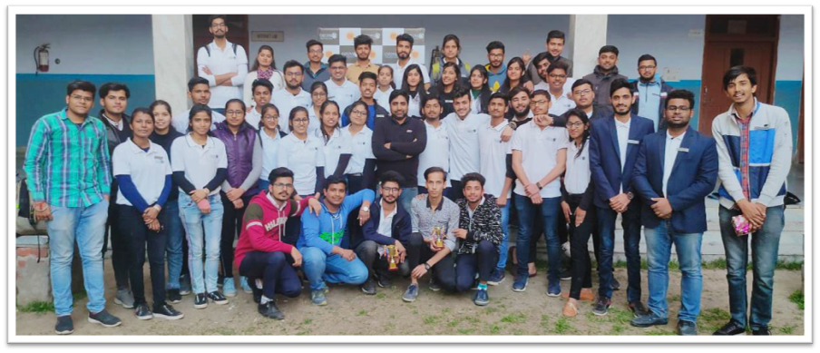

The members of The Ozone Society in association with SpikeAge.com organised an 3-day event called SpikeAge Talks for embarking the importance of women in our life on the auspecious occassion of International Women's Day.
The event focused on talking to the women who have excelled in there respective domains and have set an example for the rest of the women out there. We were successfull in inviting personalities including the Director of Vaish College, Gynologist, SHO Bhiwani, and many more. The event was a grand success and the members gained a lot of event management experience by this event.
The three day event came to a beautiful end by a grand ceremony whoch took place at HSB Food Court, Bhiwani in which all our in-house artists set the stage on fire with there different performances and activites.
The Ozone Society at SpikeAge Talks, HSB Food Court Bhiwani
Blur Racing (Gaming Event)
The OZONE Society organised a gaming event, teaching the society student the skill of hosting a multiplayer game over a single-network/LAN. The event was a great success as we got a participation of 53 students form different branches of our institute.
Blur is not a common racing game. It combines the fun of destroying your opponents from Mario Kart with the elegance of Need for Speed. Blur displays stunning racing environments based on real locations around the world and real cars that look great.
The winner and the runner up of the event were awarded with bumper prizes along with a certification from the society. The event was an another edition of the gaming-event series of the society.

Annual Gaming Event of The Ozone Society
Dart HTC(Techno-Social Quiz)
The annual event of the society, DART-HTC is a quiz organized by the society in order to test the IQ level of the new students at the institute. Targeting the freshers, the quiz level is kept moderate covering topics from day to day life so that the students doesn’t face a lot of trouble while participating.
The major attraction of the quiz is the Graphics Round in which different type of sub-round takes pace. The quiz does consist of a jackpot round in which any team can make a phase of change and win the event.
The event is fascinating enough to attract a crowd of 70-80 students in a team of 4 students every year. The winning team is awarded and if is organised as an introductory event then the reward is the advantage of skipping the first round of the Annual Recruitment of the society.
Annual Techno-Social Quiz Event of The Ozone Society
Excursion to Mussoorie
The OZONE Society believes that some relaxation is necessary for every individual in order to maintain balance between the academics and this competitive world. Therefore, we organised an Excursion to the Queen of Hills, Mussoorie
The tour was open to every individual of the institute, and we successfully managed in enjoying the three-day excursion along-with a group of 30 students accompanied by two of faculty members, Dr. Nidhi Sharma (Mentor of Society) & Mr. Hardik Chaudhary (Administration Dept.). The excursion would not have been possible without the support of Dr. Mukesh Kumar (Head of Dept., Computer Engineering).
The excursion was a great success, and the students made a lot of beautiful memories during the excursion. All the arrangements were made prior in hand and the society looks forward to plan many such excursions in the future.
The Ozone Society at Mussoorie, Uttarakhand
QR-ka-WAR (Annual Event of Society)
War, A very aggressive competition between groups of people, companies, countries, etc.
THE OZONE SOCIETY also organize a special war in the College premises as its Annual event, named as "QR-ka-War". Inspired by one of the most common games, i.e. "Treasure Hunt", which is twisted technically.
Under this, all the participants have to scan a QR code, in order to find the clue, to the next destination. At every destination, they find a part of the complete mystery, which they are supposed to solve.
The mystery changes every year but the principles remains the same. This makes this event, a complete fun, with healthy competition between different groups.
Every year a very mass crowd register for this event and tests their skills. Top 3 teams which successfully solve all its hurdles within the time limit are awarded. This Annual-Technical Event of the society is always an all-time hit and a great success.